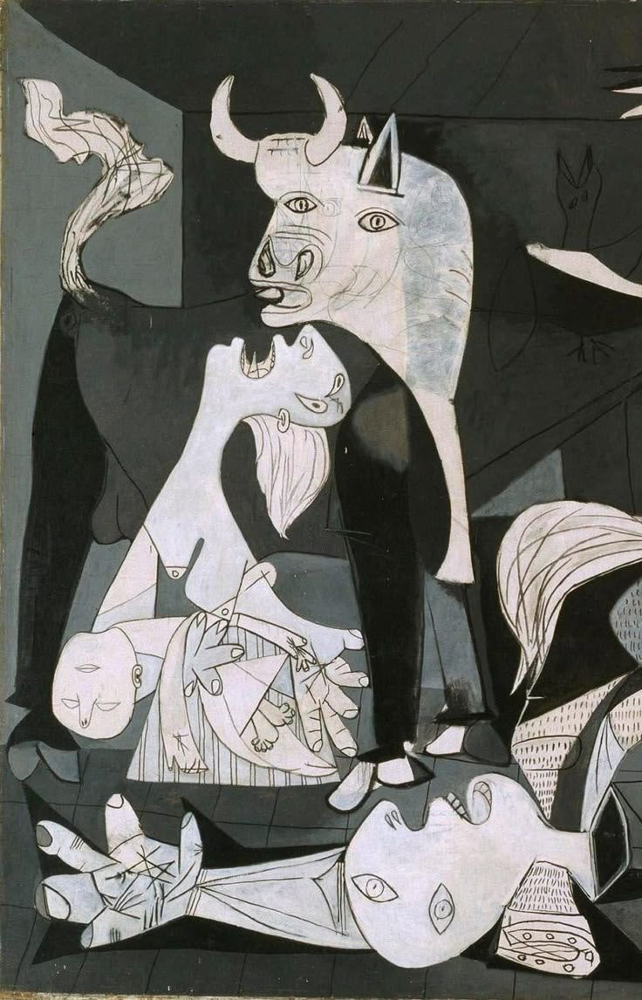
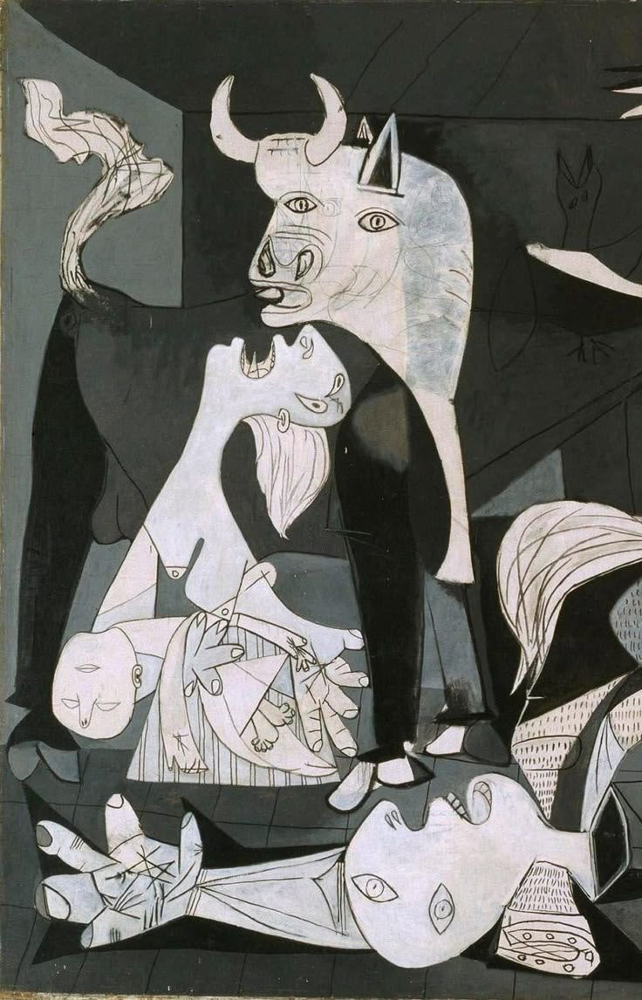
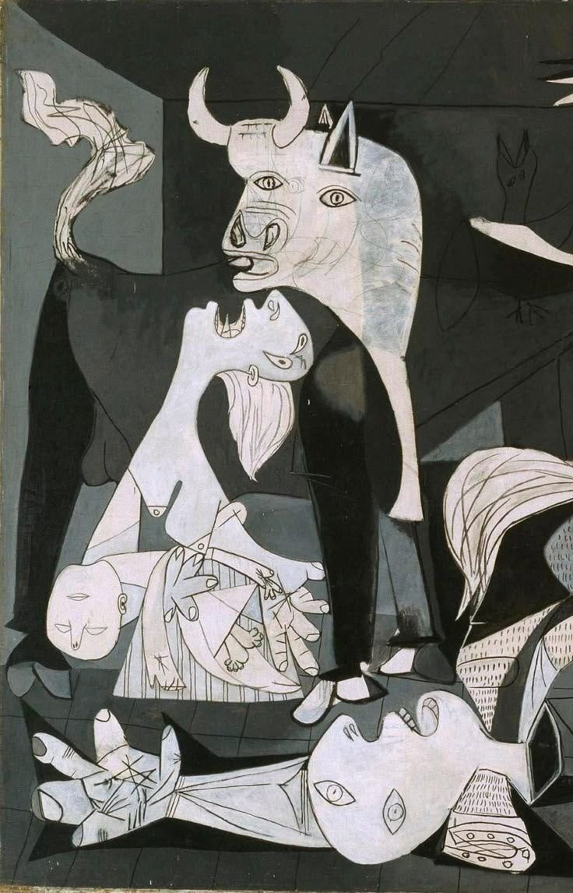

Timeless Strokes, Endless Stories.

This curated collection features some of the most iconic and celebrated works in art history. Each painting represents a unique moment in time, a distinct style, and a profound message that has inspired generations of art lovers across the world.
The enigmatic smile that captivates viewers and symbolizes Renaissance art.
A swirl of emotion and movement under a midnight sky, expressing the turmoil and beauty within.
A surreal reflection on time, reality, and dreams, marked by melting clocks.
Often called the ‘Mona Lisa of the North’, this work captures quiet mystery and elegance.
A powerful expression of modern existential angst, with colors and strokes that echo emotional intensity.
A bold political statement against war, portraying human suffering with stark, cubist imagery.